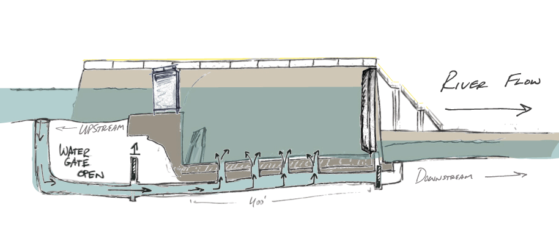

William W. Lager
A selection of animations

Upper St. Anthony lock closing after half a century; blame the carp| How a lock and dam works. - MPR News
Floodwaters rise quickly and may wash away anything in the flood plain - MPR News
How naloxone stops an overdose - MPR News

Animation of the life cycle of a mosquito - MPR News